SACCO portal: before and after (milestone 6b)
Before: milestone 6, signed in as the demo manager. After: signed in as the demo officer. Fictional demo data.
Home, desktop
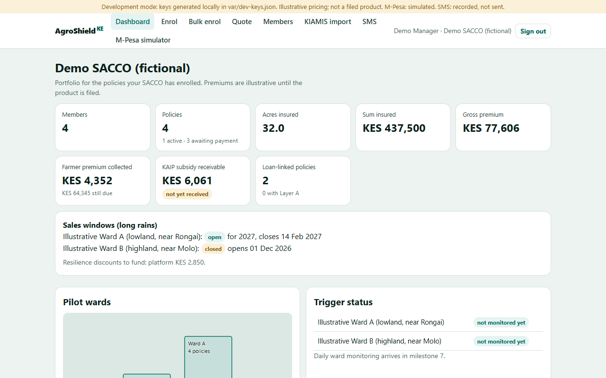
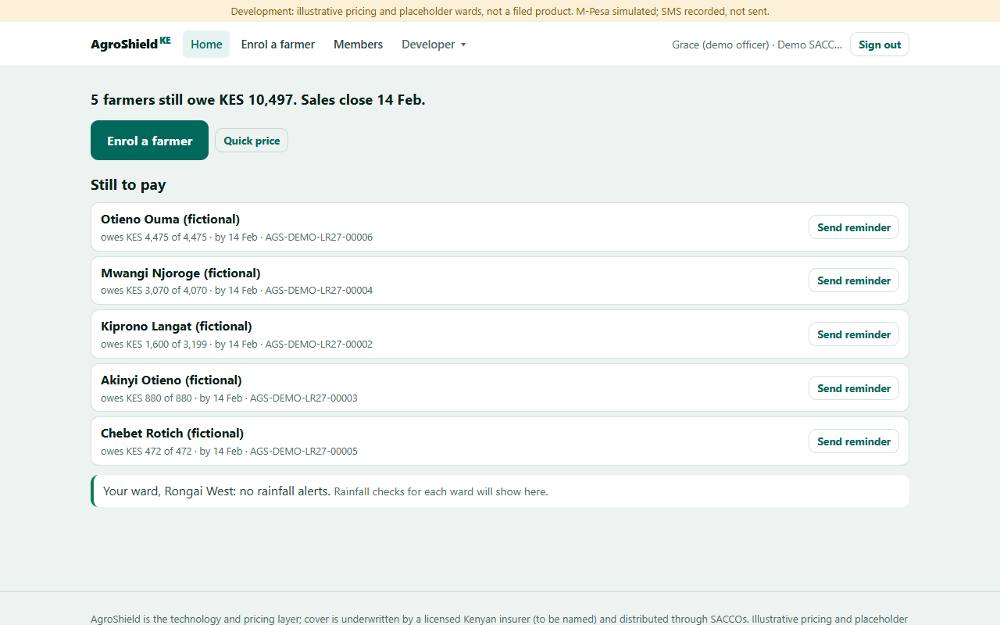
Home, 375 px
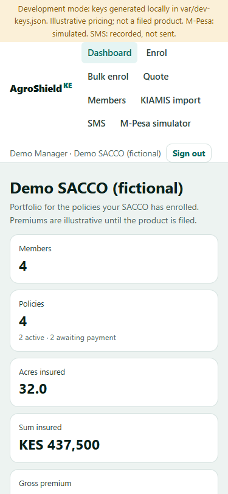
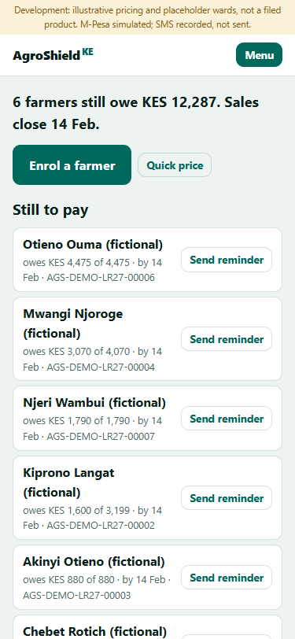
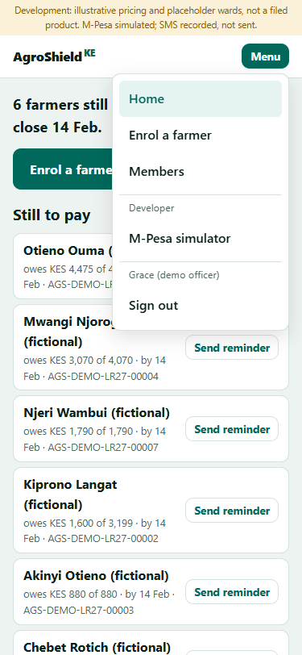
Enrol, desktop
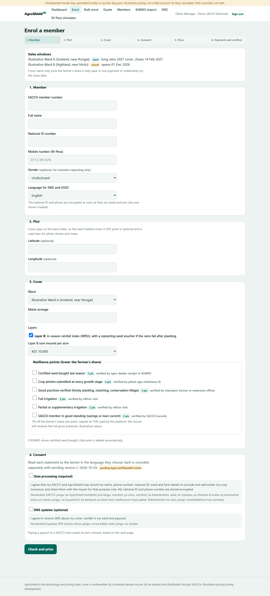
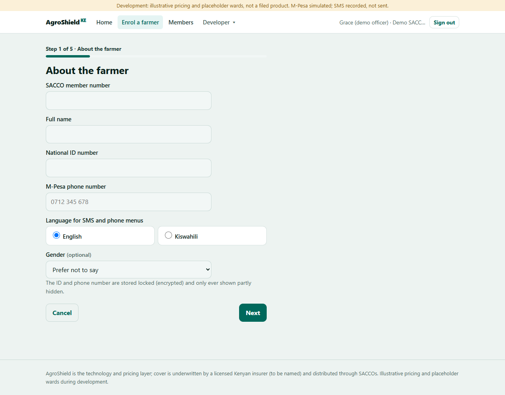
Enrol, 375 px: all five screens
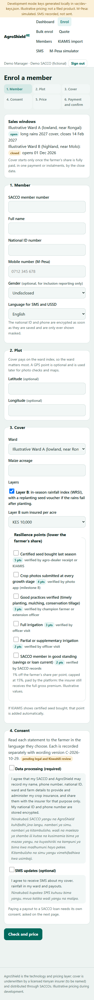
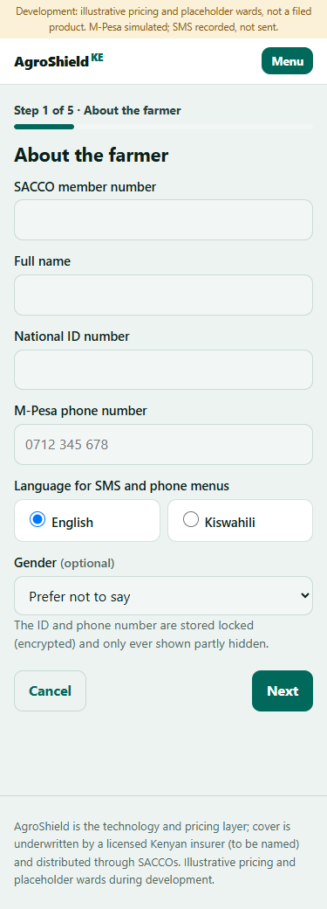
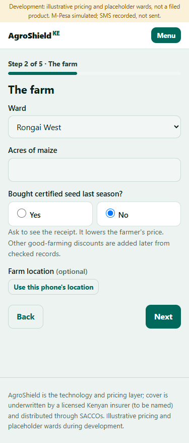
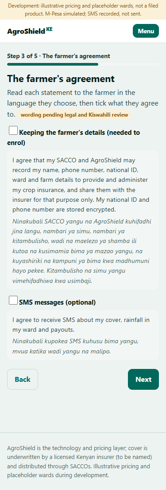
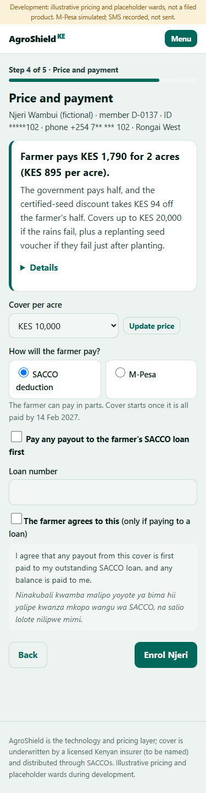
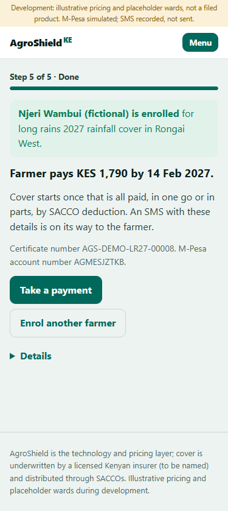
Price answer, desktop
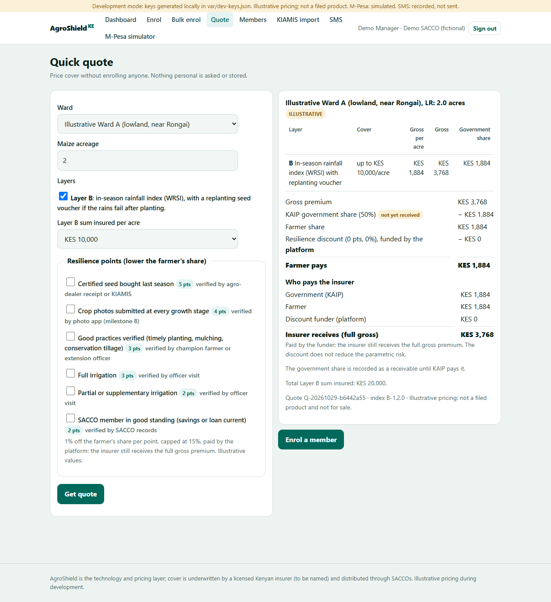
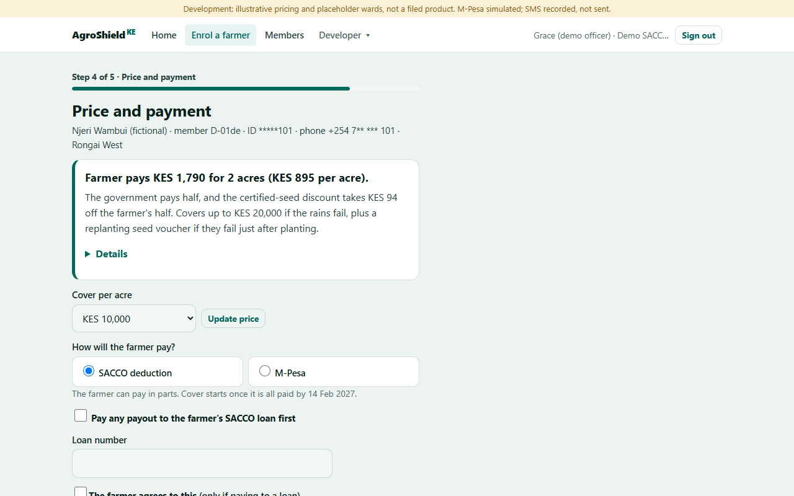
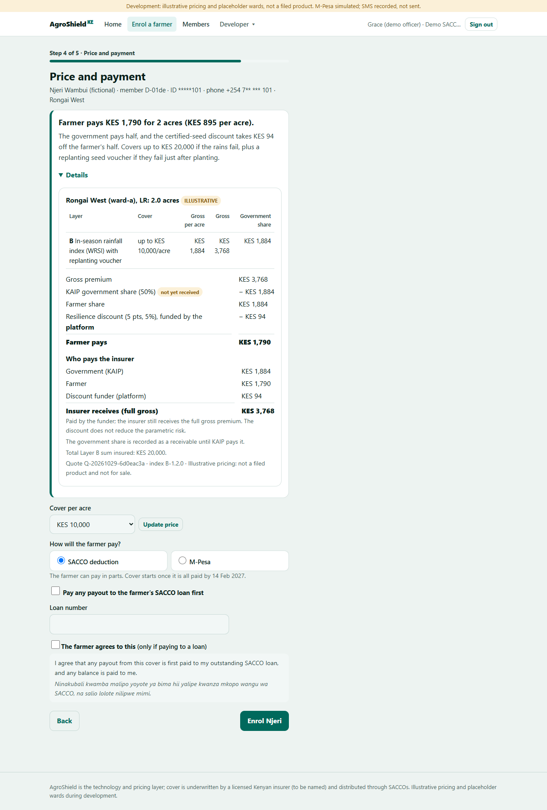
Price answer, 375 px
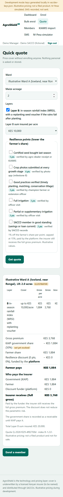
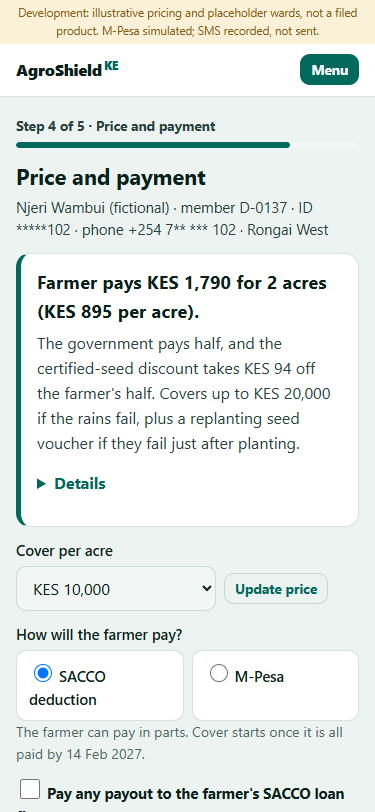
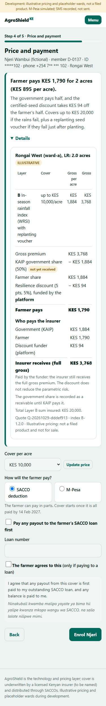